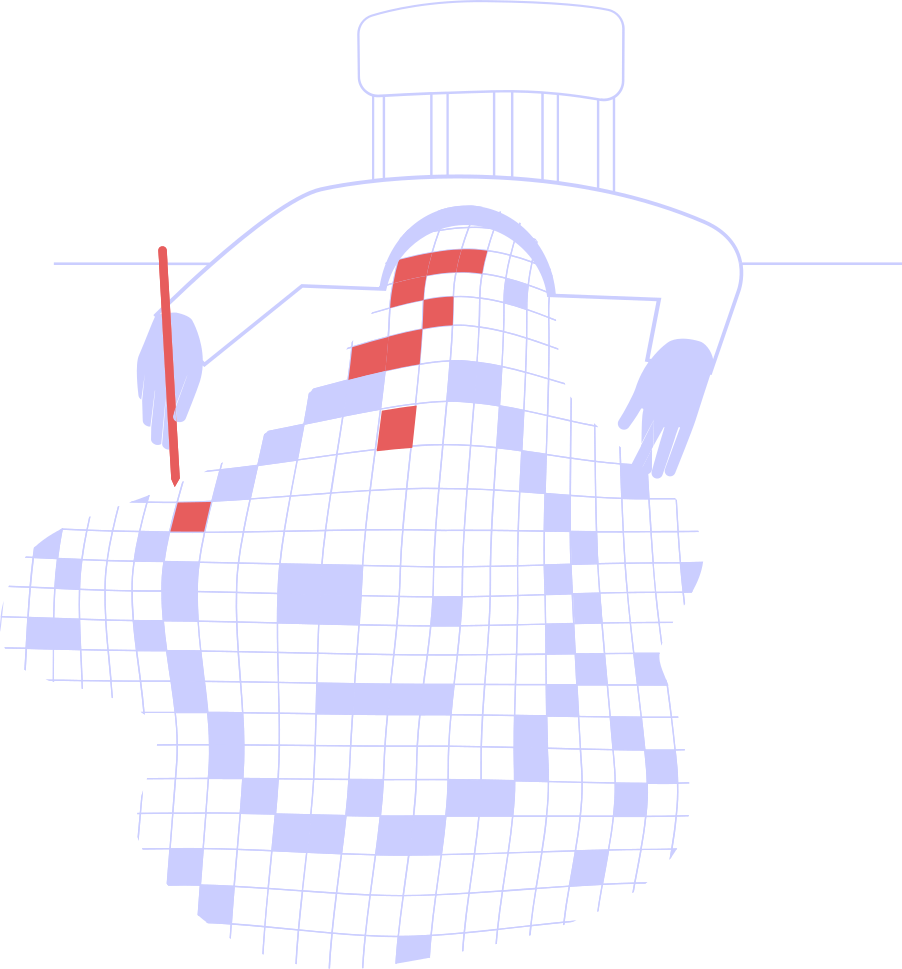

Fejlkode 404 — Side ikke fundet

Den side du leder efter eksisterer ikke — eller er gledet ind i vågentilstanden uden protokolgodkendelse.
Sandsynlig årsag: Siden befinder sig i REM-fase 3 og kan ikke vækkes.
Prøv igen efter næste søvncyklus. Behandlingstid: 3–5 forsøg.